BACKLOG API 1 SEMESTRE
Épicos
- Exportação de Dados (Back-end): A consolidação e exportação de dados costumam ser tarefas realizadas no back-end, pois envolvem o processamento e a preparação de dados para exportação.
- Gerenciamento de Turmas (curso) : Esse épico está relacionado à criação, atualização e visualização de turmas, que envolvem a interface do usuário para realizar essas operações.
- Gerenciamento de grupo : Esse épico está relacionado à criação, atualização e visualização de grupos, que envolvem a interface do usuário para realizar essas operações.
- Gerenciamento de Alunos : Esse épico lida com a adição, atualização e visualização de informações de alunos, bem como a adição de notas parciais, todos os quais são interações do usuário com a interface.
- Gerenciamento de Ciclos de Entrega e Scores: Este épico envolve a criação, atualização e visualização de ciclos de entrega e scores parciais, que são aspectos visíveis para o usuário.
- Visibilidade e Acompanhamento: Esse épico visa fornecer informações objetivas sobre turmas, grupos de alunos, etc. A apresentação dessas informações é uma preocupação do front-end.
- Configurações Globais (Back-end): Este épico envolve a definição de parâmetros globais e o afeta o funcionamento do sistema. Essa configuração geralmente é tratada no back-end.
- Importação de Dados massivo (Back-end): A tarefa de carregar informações de alunos e scores a partir de arquivos é uma operação que envolve o back-end, pois requer manipulação de dados.
Detalhamento dos Épicos
Épico 1: Exportação de Dados
História de Usuário 1: Como um administrador, eu quero selecionar as opções de gerenciamento e relatórios. Isso envolve a exportação de dados.
Frontend: - Botão no Index.html que gere relatórios vindo dos: gerenciamento_turmas.html, gerenciamento_alunos.html, gerenciamento_ciclos.html, gerenciamento_global.html.
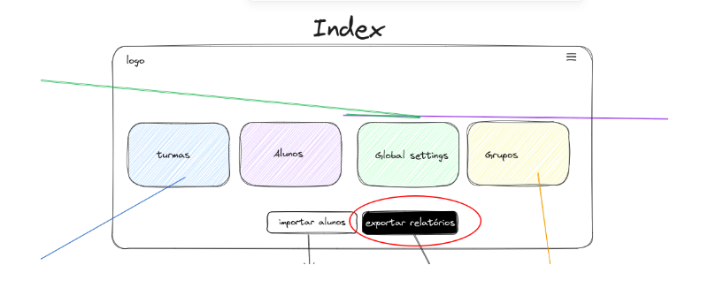
Backend: - Rota da API
- /api/relatorio/criar: Consolida os dados e exporta em formato PDF.
- Consolida os dados e os exporta em formato PDF.
Épico 2: Gerenciamento de Turmas
História de Usuário 1: Como um administrador, eu quero visualizar a lista de turmas disponíveis, seus respectivos grupos com os alunos e alunos.
Frontend:
- Gerenciamento_turmas.html que conterá todas as turmas já criadas com ícone de edição e de exclusão em cada um deles.
- Deverá ser criado um campo onde serão inseridas as turmas de forma dinâmica.
- Botão para criar uma nova turma.
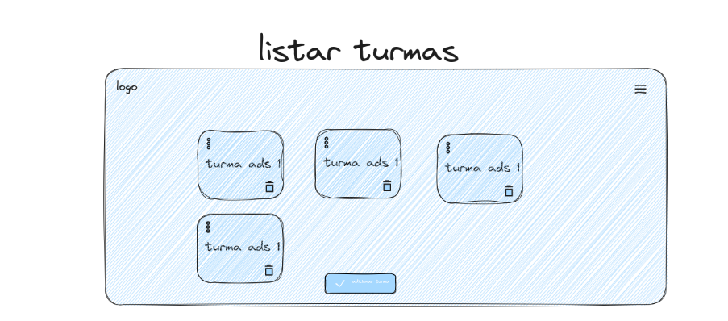
Backend - Módulo gerenciador_turmas.py com funções para listar turmas. - Rotas de API: - /api/turmas/get: Retorna a lista de turmas disponíveis. - /api/turmas/delete: Deletar uma turma.
História de Usuário 2: Como um administrador, eu quero criar uma nova turma com nome da turma, o professor e a associação de grupos pré-existentes ou nenhum grupo. A turma não precisa ser criada com grupo de alunos, mas precisa poder recebê-los. A turma só será ativa com grupo de alunos vinculados.
Frontend: - Template HTML para Gerenciamento de Turmas:
- criar_turma.html que conterá os formulários para criar uma nova turma.
- A inclusão de grupos de alunos não precisa ser obrigatória.
- Nome da turma e professor são obrigatórios.
- Campo para procurar por um grupo pré-existente
- Campo para listar grupos
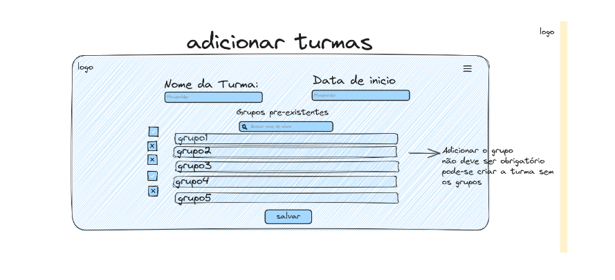
Backend:
- Módulo gerenciador_turmas.py com funções para criar uma turma com/sem novo grupo de alunos.
-
Rotas de API:
- /api/turmas/criar: Manipula a criação de uma nova turma.
- /api/grupos /listar: Manipula a lista de grupos preexistente
História de Usuário 3: Como um administrador, eu quero editar as informações de uma turma e adicionar mais grupos.
- Template HTML para Gerenciamento de Turmas:
- editar_turmas.html que conterá os formulários de edição de uma nova turma, com possibilidade de ser levada a edição de grupo e de criar novo grupo.
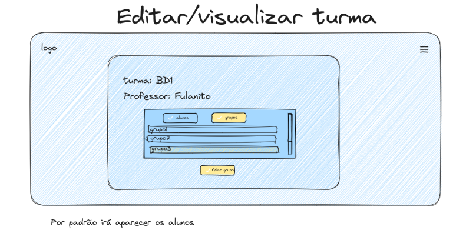
- Módulo gerenciador_turmas.py com funções para atualizar informações de turma e editar grupo de alunos.
-
Rotas de API:
- /api/turmas/atualizar/{id}: Manipula a atualização das informações de uma turma específica.
- /api/grupos/atualizar/{id}: Manipula a atualização das informações de um grupo de alunos específico.
História de Usuário 4: Como um administrador, eu quero excluir uma turma e um grupo de alunos.
Frontend:
Ícone de exclusão do grupo
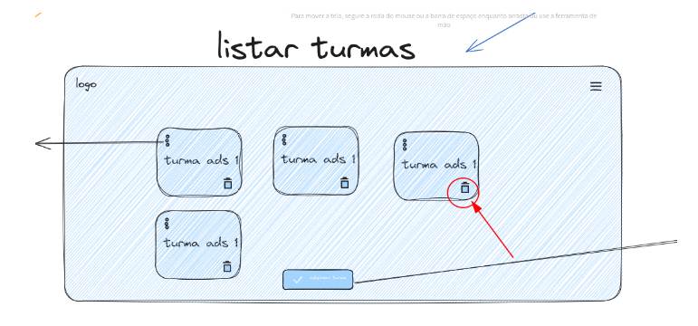
- Módulo gerenciador_turmas.py com funções para excluir turmas.
- Rotas de API:
- /api/turmas/excluir/{id}: Manipula a exclusão de uma turma específica.
- /api/grupos/excluir/{id}: Manipula a exclusão de um grupo específico. (Vamos excluir o grupo?)
**
Épico 3: Gerenciamento de grupos**
História de Usuário 1: Como administrador, quero ver todos os grupos formados e associados às turmas.
Frontend:
- Template HTML para visualização de grupos:
- gerenciamento_grupos.html que conterá todos os grupos já criados com ícone de edição e de exclusão em cada um deles.
- Cada grupo deve apresentar seu nome e respectiva turma.
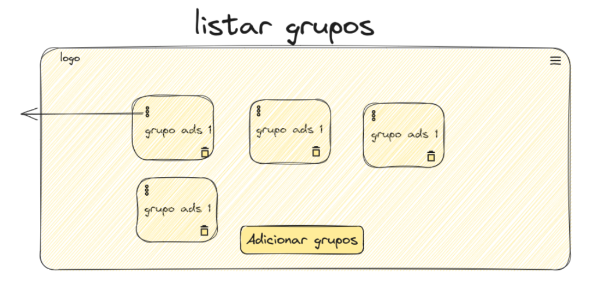
Backend:
- Módulo gerenciador_grupos.py com funções para listar os grupos associados às turmas.
- Rotas de API:
- /api/grupos/listar: Manipula a listagem de grupos.
História do usuário 2: Como um administrador, eu quero criar grupos de alunos associado a uma turma.
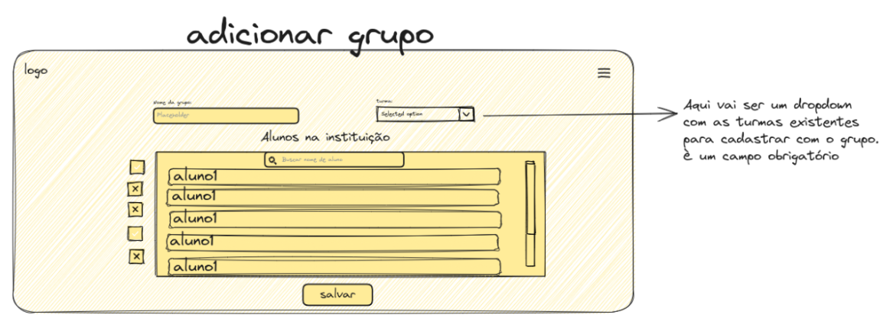 Frontend
- Template HTML para criar um grupo:
- criar_grupo.html que conterá os formulários de criação de um novo grupo
- Selecionar a qual turma ele pertencerá.
- Para adicionar um grupo é necessário inserir o nome do grupo e a turma.
Backend
- Módulo gerenciador_grupo.py com funções para adicionar pré-existente, e associar esse grupo a uma turma.
- Rotas de API:
- /api/tumas/listas: Fazer a leitura das turmas existentes.
- /api/grupos/adicionar: Manipula a adição de um novo grupo a uma turma.
História do usuário 3: Como um administrador, eu quero editar grupos, essas devem ser associado a uma turma.
Frontend
- Template HTML para Gerenciamento de um grupo:
- editar_grupo.html conterá as informações do grupo selecionado
- Pode levar a visualização das notas do aluno.
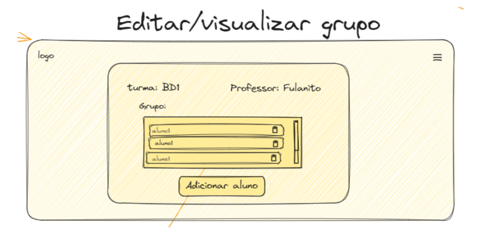
Backend:
- Módulo gerenciador_grupo.py com funções para adicionar alunos pré-existente, excluir aluno do grupo e editar qual turma esse grupo está associado.
- Rotas de API:
- /api/grupos/editar/{id}: Manipula para editar grupos.
História de Usuário 4: Como administrador, quero excluir os grupos fFrontend:
- Template HTML para visualização de grupos:
- visualizacar_grupos.html que conterá todos os grupos já criados com ícone de edição e de exclusão em cada um deles.
- O ícone deve acionar a ação de excluir 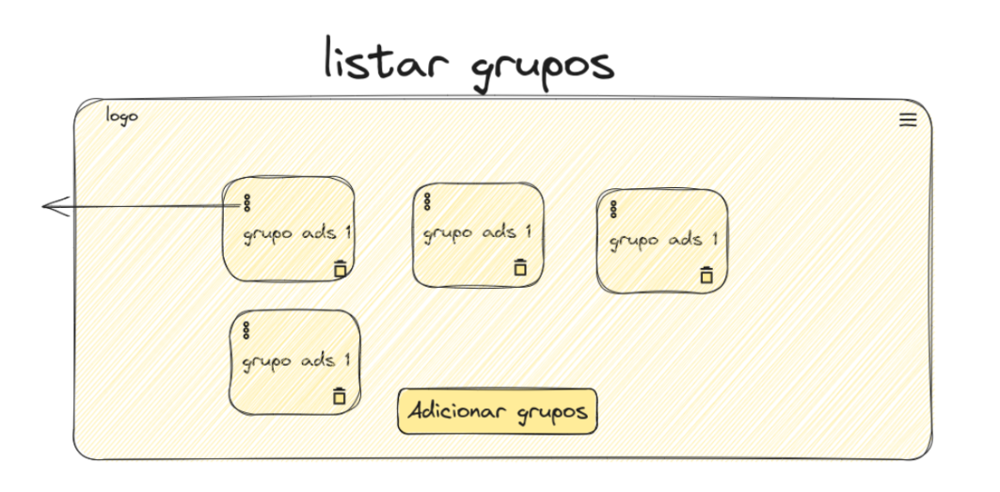
Backend:
- Módulo gerenciador_grupos.py com funções para excluir o aluno selecionado.
- Rotas de API:
- /api/grupos/excluir/{id}: Manipula a listagem de grupos, excluindo o selecionado.
Épico 4: Gerenciamento de Alunos
História de Usuário 1: Como um administrador, eu quero listar alunos existentes.
Frontend
- Template HTML para listar Alunos:
- gerenciamento_alunos.html que conterá um buscador e uma lista de alunos existentes, com botão para edição e de exclusão, e hiperlink para as notas do aluno
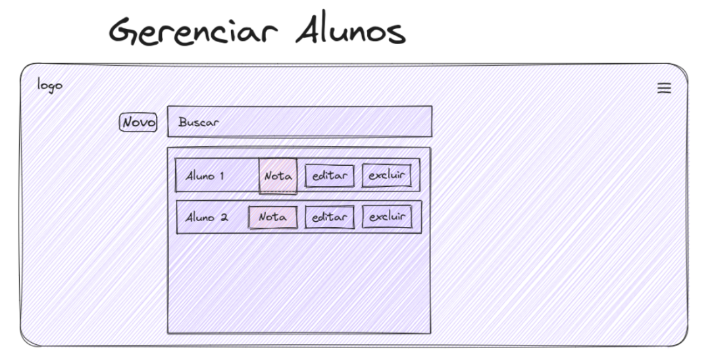
Backend
- Módulo gerenciador_alunos.py com funções para listar um aluno.
- Rotas de API:
- /api/alunos/listar: Manipula a adição de um novo aluno.
História de Usuário 2: Como um administrador, eu quero adicionar um novo aluno com informações pessoais e matrícula
Frontend
- Template HTML para Adicionar Alunos:
- gerenciamento_alunos.html que conterá o formulário para adicionar um novo aluno
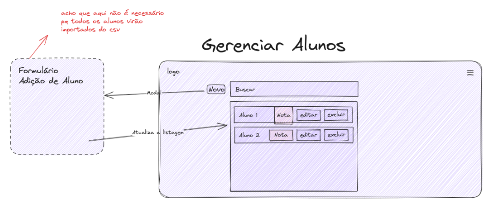
Backend
- Módulo gerenciador_alunos.py com funções para adicionar um aluno.
- Rotas de API:
- /api/alunos/adicionar: Manipula a adição de um novo aluno.
História de Usuário 3: Como um administrador, eu quero editar as informações de um aluno existente.
Frontend:
- Template HTML para editar aluno:
- edicao_alunos.html que conterá o formulário para adicionar um novo aluno
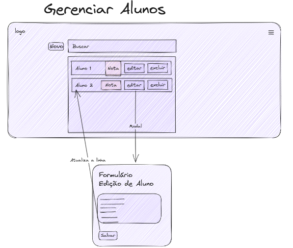
Backend:
- Módulo gerenciador_alunos.py com funções para atualizar(editar) informações de alunos.
- Rotas de API: /api/alunos/atualizar/{id}: Manipula a atualização das informações de um aluno específico.
História de Usuário 4: Como um administrador, eu quero excluir alunos.
Frontend:
- Template HTML para editar aluno :
- gerenciamento_alunos.html que um botão para exclusão do aluno
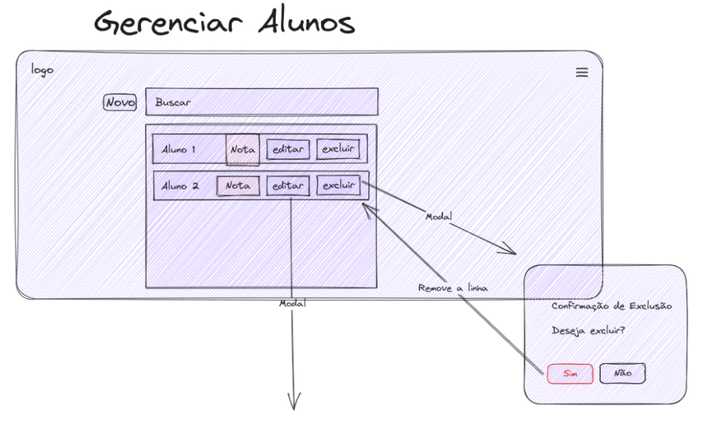
Backend:
- Módulo gerenciador_alunos.py com funções para excluir alunos.
- Rotas de API: /api/alunos/excluir/{id}: Manipula a atualização das informações de um aluno específico.
Épico 5: Gerenciamento de Ciclos de Entrega e Scores
História de Usuário 1: Como um administrador, eu quero visualizar(listar) as notas de um aluno.
Preciso criar um campo para exibir o FEE total e parcial. Qual o cálculo do FEE? FEE = ((Score do Ciclo de Entrega 1 (C1) * Peso de C1) + ... + (Score do Ciclo de Entrega N (CN) * Peso de CN)) / Soma dos Pesos de C
Frontend:
- Template HTML para Gerenciamento de Ciclos de Entrega: gerenciamento_ciclos.html que conterá o aluno, as turmas que estão matriculadas e as respectivas novas.
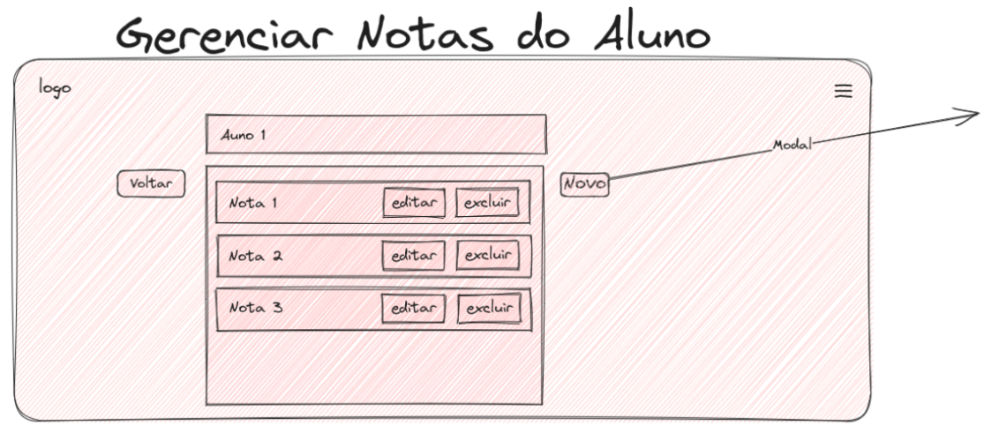
Backend:
- Módulo gerenciador_ciclos.py com funções para listar as turmas e as notas associadas aquele aluno.
- Rotas de API: /api/notas/listar/aluno/{id}: Manipula a lista de um novo ciclo de entrega
História de Usuário 2: Como um administrador, eu quero adicionar uma nova nota a um aluno.
Frontend:
- Template HTML para Gerenciamento de Ciclos de Entrega: gerenciamento_ciclos.html que conterá os formulários para criar uma nova nota associada a uma turma. 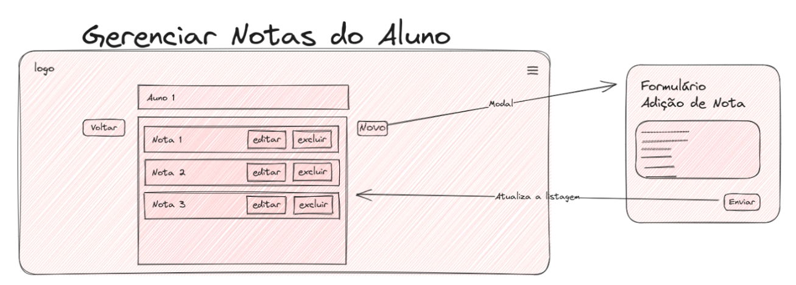
Backend:
- Módulo gerenciador_ciclos.py com funções para criar nota associada a aluno e ao ciclo de entrega.
- Rotas de API: /api/notas/criar/turma/{id}: Manipula a criação de um novo ciclo de entrega
História de Usuário 3: Como um administrador, eu quero editar as notas de entrega existente.
Frontend:
- Template HTML para Gerenciamento de Ciclos de Entrega: editar_nota.html que conterá os formulários para editar uma nota pré-existente associada a uma turma.
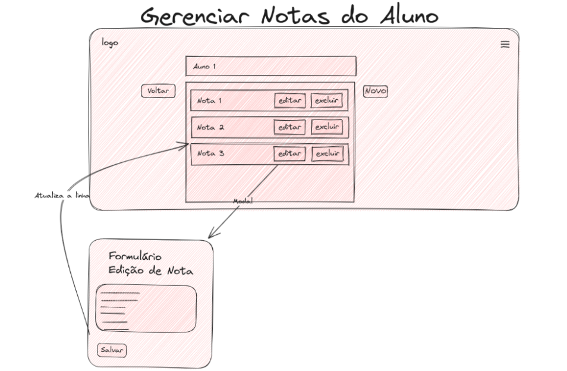
Backend:
- Módulo gerenciador_ciclos.py com funções para as notas de ciclos de entrega.
- Rotas de API:
- /api/nota/atualizar/{id}: Manipula a atualização da nota em uma determinada entrega específica.
História de Usuário 4: Como um administrador, eu quero excluir notas parciais para os alunos em relação a um ciclo.
Frontend:
- Template HTML para Gerenciamento de Ciclos de Entrega: gerenciamento_ciclos.html que conterá um ícone que deletar a nota de um aluno associado a um ciclo e uma turma.
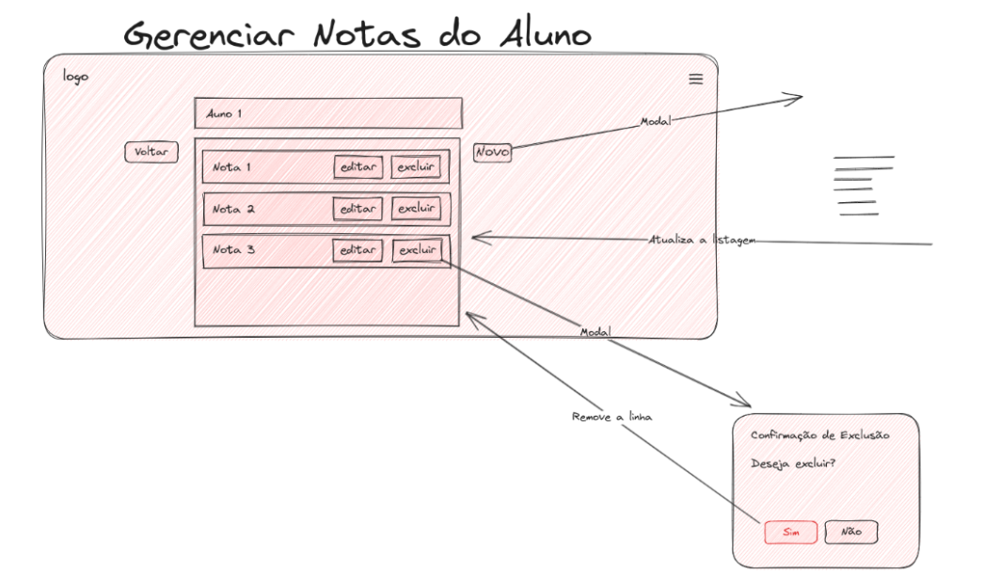
Backend:
- Módulo gerenciador_ciclos.py com funções para excluir as notas de ciclos de entrega.
- Rotas de API:
- /api/nota/excluir/{id}: Manipula a exclusão de uma nota em uma determinada entrega específica.
Épico 6: Configurações Globais
História de Usuário 1: Como um administrador, quero listar e ver os parâmetros globais das turmas
Frontend:
- Template HTML para Gerenciamento Global: gerenciamento_global.html que conterá as turmas existentes com seus respectivos parametros globais. Todas devem conter seu botão de editar.
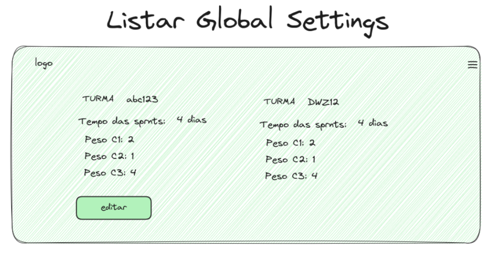
Backend:
- Função para listar parâmetros globais no módulo gerenciador_configuracoes.py
- Rota de API: /api/globalsettings/listar
- para manipular a atualização dos parâmetros globais.
História de Usuário 2: Como um administrador, eu quero editar parâmetros globais, como datas do período letivo.
Frontend:
- Template HTML para Gerenciamento Global: gerenciamento_global.html que conterá os formulários para atualizar os parâmetros globais de cada turma. 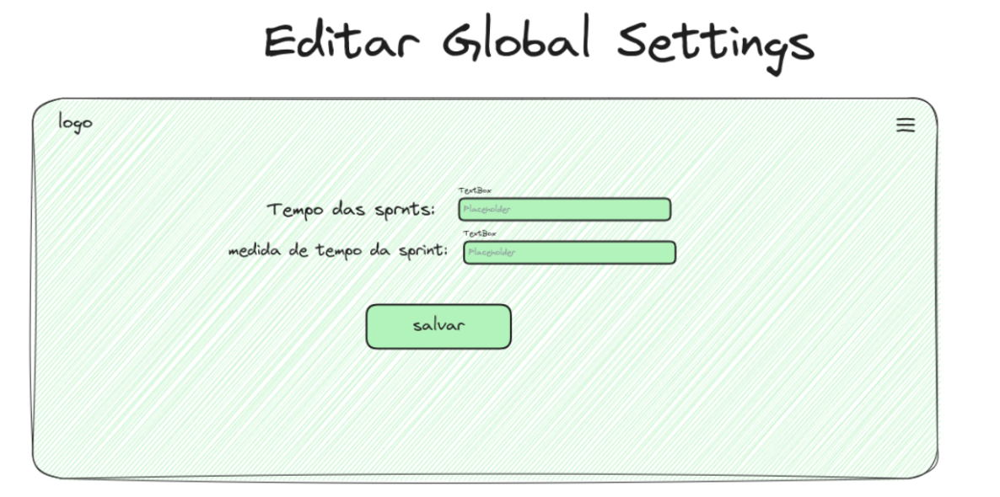
Backend:
- Função para atualizar parâmetros globais no módulo gerenciador_configuracoes.py
- Rota de API :api/globalsettings/{id}/editar
- para manipular a atualização dos parâmetros globais.
Épico 7: Carregamento de Dados massivo
História de Usuário 1: Como um administrador, eu quero carregar informações de alunos partir de arquivos.
Frontend:
- Tela de index.html terá um botão para update para o carregamento do CSV
- Sugestão ( botão que faz download de uma planilha padrão de sugestão para a importação do CSV)
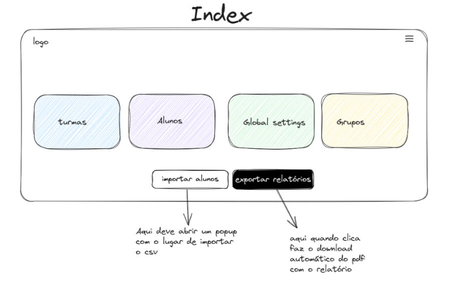
Backend:
- Módulo carregamento_dados.py com funções para carregar informações de alunos e scores a partir de um arquivo CSV.
- Função para autenticar o formato do CSV, ou seja, ver se está dentro dos padrões.
- Função para realizar o cadastramento de cada um dos alunos.
- Rotas de API:
- /api/carregamento: Manipula o carregamento de dados a partir de arquivos.
Persistência de dados
Relação de Entidades
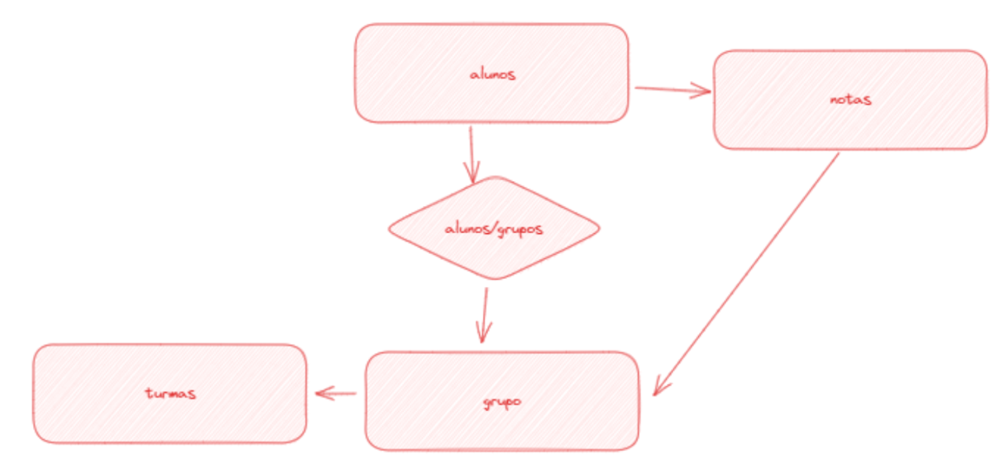
Nessa relação temos que um aluno pode estar matriculado em diferentes cursos, o aluno mateus tem duas listas de notas, uma para cada curso matriculado.
Dessa forma será possível fazer a média e adquirir estatísticas de notas de diferentes cursos e turmas.
Tabelas de banco de dados
1. Dados de Cursos:
cursos (array): Contém informações sobre os cursos disponíveis.
id (inteiro): ID único do curso. nome_curso (string): Nome do curso. professor (string): Nome do professor responsável pelo curso. qtd_sprint (inteiro): Quantidade de sprints associadas ao curso. turmas (array de inteiros): IDs das turmas relacionadas ao curso.2. Dados de Turmas:
turmas (array): Contém informações sobre as turmas. id (int): ID único da turma.
id_curso (inteiro): ID do curso ao qual a turma está associada. nome_turma (string): Nome da turma.{
"turmas" : [
{
"id": 1,
"id_curso": 1,
"nome_turma" : "Turma A"
},
{
"id": 2,
"id_curso": 2,
"nome_turma" : "Turma A"
}
]
}
3. Dados de Grupos:
id (int): ID único do grupo.
id_curso (inteiro): ID do curso ao qual o grupo está associado. id_turma (inteiro): ID da turma à qual o grupo pertence. nome_grupo (string): Nome descritivo do grupo. alunos (array de inteiros): Uma lista de IDs de alunos que fazem parte deste grupo.{
"grupos" : [
{
"id": 1,
"id_curso": 1,
"id_turma": 1,
"nome_grupo": "Grupo A",
"alunos": [1,2]
}
{
"id": 2,
"id_curso": 2,
"id_turma": 3,
"nome_grupo": "Grupo B",
"alunos": [3]
}
]
}
4. Dados de Alunos:
alunos (array): Contém informações sobre os alunos matriculados em cursos.
id (int): ID único do aluno. nome (string): Nome do aluno. cursos_id (array de inteiros): IDs dos cursos aos quais o aluno está matriculado. notas (array de objetos): Contém informações sobre as notas do aluno em diferentes cursos e turmas. id_curso (inteiro): ID do curso relacionado às notas. id_turma (inteiro): ID da turma relacionada às notas. notas (array de números): Lista de notas obtidas pelo aluno no curso e turma específicos. ffe (nulo ou qualquer outro valor): Média das notas.```python { "alunos": [ { "id": 1, "nome": "Mateus", "cursos_id": [1, 3], "notas": [ { "id_curso": 1, "id_turma": 1, "notas": [5, 6.23, 10], "ffe": null }, { "id_curso": 3, "id_turma": 4, "notas": [5, 8], "ffe": null
}
]
}
]
}
```
**
BACKLOG API (2º SPRINT):
Épico 1: Gerenciamento de turma:
História de Usuário 1: Como um administrador, eu quero criar uma nova turma.
-
Criar tela inicial que encaminhe para a administração de um curso.
-
Na tela deve aparecer os cursos cadastros e ter a opção de cadastrar novo curso.
-
Para cadastrar um curso será necessário no mínimo adicionar seu nome e o professor responsável.
-
Criar validação para que o nome do curso não seja repetido.
-
Demais opções de curso são: quantidade de sprints e selecionar quantas turmas ele quer criar (banco de dados = bdd então bdd1, bdd2, ..., bdd5).
-
Operações CRUD (Create, Read, Update, Delete).
-
Campo para procurar um curso existente.
História de Usuário 2: Como um administrador, eu quero adicionar uma turma.
-
Criar tela de administração de turmas.
-
Na tela deve aparecer turmas cadastrar e ter a opção de cadastrar nova turma.
-
Para cadastrar uma turma é necessário escolher um curso.
-
Operações CRUD (Create, Read, Update, Delete)
-
Campo para procurar uma turma existente.
-
Teste para ver se o relacionamento entre o curso e a turma então corretos.
História de Usuário 3: Como um administrador, eu quero adicionar um aluno a uma turma.
- Criar tela de administração de alunos.
História de Usuário 4: Como um administrador, eu quero adicionar um aluno a um grupo.
Épico 2: Rotas de API:
História de Usuário 1: Como administrador eu quero configurar meus cursos.
-
Necessário criar as rotas para que o front end consiga fazer o croud
-
Documentar as rotas e suas funções